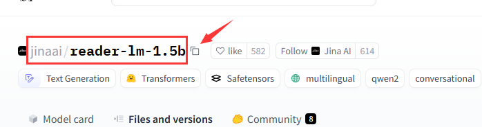

1. Repo ID Input Box
Purpose: Enter the Repository ID (Repo ID) to identify the model.
Format: Typically in the format of username/model-name.
Example:
- huggingface/transformers
- openai/gpt-2
Example Image:
2. Filename (Optional) Input Box
Purpose: Specify a file to download. If left blank, the entire model directory will be downloaded.
Format: Typically in the format of filename.extension
Example:
my_model_v1.pth
3. Proxy Address Input Box
Purpose: Enter a proxy address if needed to download the model.
4. Enable Proxy Option
Purpose: Check this option to attempt downloading the model through the proxy.
Note: Uncheck this option if you do not need to use a proxy.
5. Exit Program Button
Purpose: Stop the download process.
Note: Exiting will terminate the download.